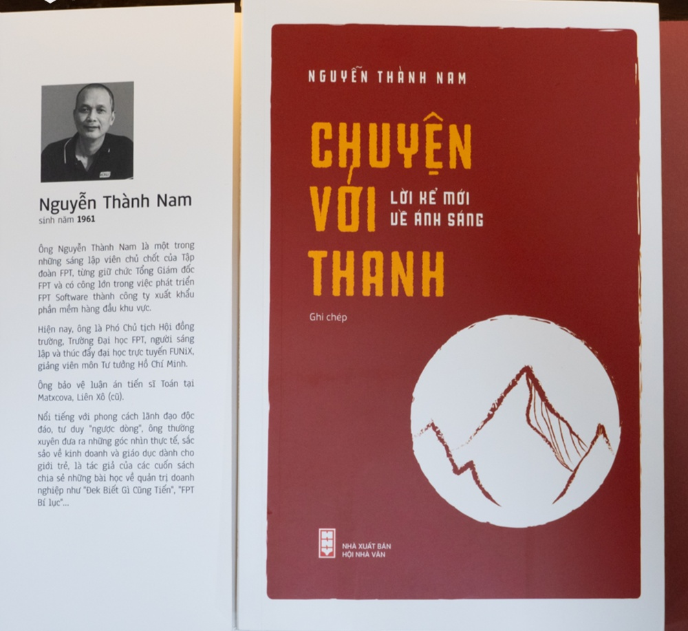

Truyện Với Thanh - Tác giả Nguyễn Thành Nam

Đám đông, tinh hoa và vận động xã hội
1. Vận động xã hội khác một chiến dịch truyền thông bán hàng. Bản chất và mục tiêu của bán hàng là bán được nhiều hàng, do đó thị hiếu của đám đông là quan trọng. Dù có nói về sản phẩm hay thế nào đi nữa, công nghệ có cao thế nào đi nữa mà đám đông vẫn không mua đều vứt đi. Đám đông, nhất là ở Việt Nam, thường nặng về cảm tính, ít lý tính, không tin ở lý trí và đạo lý. Họ quyết định dựa trên trực giác, cảm nhận, tình cảm và định kiến.
2. Vận động xã hội, đương nhiên là khó hơn nhiều, vì phải thuyết phục xã hội chấp nhận những điều trái ngược với định kiến, cảm xúc, thói quen và đôi khi phải hy sinh quyền lợi trước mắt. Đại khái chiều họ khó chẳng kém việc Hàn Phi thuyết quân vương. Và đừng coi thường, tưởng đám đông không có "vảy ngược". Đám đông thường hung hãn khi họ không bị ràng buộc bởi trách nhiệm cá nhân, và cảm thấy được hậu thuẫn vởi các tiêu chuẩn đạo đức xã hội. Đám đông ném đá phụ nữ trong kinh thánh, hay bỏ rọ trôi sông trong làng xóm Việt Nam đến tận đầu thế kỷ 20, đấu tố địa chủ, chôn sống học giả đều có cái hung hãn và tự tin ở lẽ phải của mình như vậy.
3. Thời phong kiến, để vận động xã hội thấm sâu tới tận thôn làng, nhà nước phải tạo ra hai bộ máy: hào quyền, có quyền hành chính và thân quyền, có quyền tinh thần. Đám đông manh động, ngu dốt như Binh Chức, Chí Phèo, có thể ngang như cua không sợ Bá Kiến, tuy chưa đủ tinh khôn để không bị hào quyền lợi dụng, nhưng rất biết nghe thân quyền. Chỉ cần một cụ khoa bảng, dòng dõi một chút đứng ra nói, khuyên giải, có đế dăm ba chữ thánh hiền "chi chi là con chi nẩy", "đạo khả đạo" hay "đại học chi đạo" là anh Binh, anh Chí mềm nhũn mặc dù chẳng hiểu mấy.
4. Nói một cách khác nhà nước phong kiến vận động xã hội thông qua một tầng lớp tinh hoa, để tầng lớp này thay mình vận động đám đông với ngôn ngữ phù hợp hơn. Như vậy, xã hội Á Đông cũng tự giác hình thành 3 tầng lớp của Plato: cái đầu của quân vương-nhà tư tưởng, trái tim của thân hào và cái dạ dày của đám đông. Nghệ thuật của văn thân là ngôn ngữ trình bày cho quần chúng, 3 phần là ngôn ngữ bác học mà đám đông dù có cố cũng không thể hiểu, 7 phần cực kỳ dễ hiểu. Nó thú vị ở chỗ nếu toàn ngôn ngữ bác học, đám đông sẽ tin rằng nó chẳng liên quan gì tới mình. Cực kỳ an toàn cho người nói, nhưng hiệu quả kém. Nếu toàn dễ hiểu, đám đông sẽ khinh thường người nói, sẽ bóp cổ người nói, dù có là thân quyền nếu có ý nào không hợp thị hiếu.
5. Xã hội hiện đại, nếu có gì mới chăng thì chỉ có đám đông thay thế quân vương. Thực ra cũng không phải là mới, vì trước khi có vị quân vương đầu tiên đã có đám đông ném đá. Bằng chứng còn rành rành trong Kinh Thánh. Điều mới mẻ thực sự, đám đông mới cực kỳ căm ghét học thức, có lẽ vì bắt buộc phải nếm 30% tri thức độn quá lâu. Cứ nói có bằng cấp, học thức Tây Tầu là đã có rất nhiều người muốn xử đẹp và đương nhiên xử theo kiểu học thức thì may cho kẻ táo gan quá.